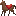
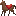

2014/0629Sun画伯

乃木どこで放送された
バイオハザード大好きアイドル。
まだまだ続きが実はあって
絵は苦手だけど頑張って
4時間かけて書いたので
全披露しようと思います！

アリスの衣装が素敵。
とくに1の赤のドレス姿。
アクションシーンなのにドレスって
さすがすぎる。

ゲームver
足の太さが...とか言われたけど
これでもかなり頑張ったんです。
右手にはショットガン。

私の大好きな武器。
ロケットランチャー∞。
∞(無限大)だからこの武器を
見つければ沢山使えるしボスキャラは
1発2発で倒せるから好き！
構えるとちょっとゴツくなるけど。笑

1でアリスとゾンビ犬が戦うシーン。

サブキャラ素敵。
LJとかは3の途中で感染しちゃうけど
意外と生き残ってる！
あと、あるあるでこういう洋画には
必ずと言っていいほど
お調子者キャラが出てくる。笑
3のワンシーン。
ゾンビが沢山いる所へ
ガソリンが入った車に乗って
自らおとりになろうとするカルロス。

車の中で一服しながらゾンビと
一緒に爆発するカルロスが
かっこよすぎる。シュワ並に。
以上！
バイオハザード大好きアイドル
番外編でした( ¤̴̶̷̤́ ‧̫̮ ¤̴̶̷̤̀ )
さてさて
先日絢音とアンダーライブを見に
いってきました
1曲目から号泣。笑

何だろう...私も頑張らなきゃ
って思ったしみんなキラキラしてて
踊ってる姿ってパワー貰えるなぁ
って。あとは2期生がステージに
立ってる姿を初めて客側として見て
感動しました。
あんなにも多くの曲を学校と両立
しながら覚えたんだなぁとか！
楽屋に顔を出したらみんなが
未央奈だー！！って来てくれて...
膝の上に乗って来たり
抱きついて来たり久しぶりに会えて
愛おしくて愛おしくて♡
モバメには書いたけど...
2期生だけでバレッタを踊ってる姿を
見てセンターがぽっかり空いてて
誰も入ってない事に驚いたし何よりも
2期生だけで踊ってる事が嬉しかった。
なんで真ん中いないの？ってみんなに
聞いたら、未央奈の場所だから！
バレッタ出てよーって
言ってくれて。
すごく嬉しかったなぁ。
あの場所、あの曲だけは譲れない。
それくらい大切な曲なんです！

先輩方のパフォーマンス、
表現力、MC。沢山勉強になりました
私もフランスの公演が近づいている
ので今回学んだ事を生かしたいな
追加公演も発表されたみたい！
アンダーライブめちゃめちゃ
面白いので皆さんも是非是非
そして若月さん誕生日
おめでとうございます♡♡
メールではもう伝えたのですが...
優しくてすごく気を使ってくださって
若月さんのくしゃくしゃな笑顔が
私は大好きです！あと鋭いツッコミが
ツボ。これからもよろしく
お願いします( ¤̴̶̷̤́ ‧̫̮ ¤̴̶̷̤̀ )

んん......？

はむっ( ˃̶̤ ·̫ ˂̶̤ )
おやすみおな。
2014/06/29 12:42
コメント(607)
みおな～こんばんは(^o^)
あるるです！
バイオ画伯
ほんと絵が特徴的で好きやわ♪
また何か書いて！(^-^)/
あと、バレッタの話良かった(TT)
真ん中は未央奈、、たしかに
そうだけど、めっちゃ感動した！
あるるです！
バイオ画伯
ほんと絵が特徴的で好きやわ♪
また何か書いて！(^-^)/
あと、バレッタの話良かった(TT)
真ん中は未央奈、、たしかに
そうだけど、めっちゃ感動した！
みおな！
アンダーライブ、ぼくは今日観てきたけど、バレッタの２期生のパフォーマンスには感動した。おまけにみおなの場所を空けておく精神性にも参りました。 いやそれだけでなく、突然変異のようにあれだけ全篇に登場して活躍できるとは、やっぱ乃木坂のおメガネにかなった娘たち、ただもんじゃないなって思った。
そして、みおな。
健全なプレッシャー(^^)を受けたね。いいよ。 選抜のメンバーは、渋谷で十分衝撃が走っただろうけど、今度はもっとおおきなインパクトだと思うよ。みおなも頼み込んででもアンダーライブで数曲参加させてもらうといい。 ま、それはムリでも、みおなも仲間に負けるもんか！って気持ちをあらためて奮い立たせて、３列目魂をみせつけて欲しいな！！
アンダーライブ、ぼくは今日観てきたけど、バレッタの２期生のパフォーマンスには感動した。おまけにみおなの場所を空けておく精神性にも参りました。 いやそれだけでなく、突然変異のようにあれだけ全篇に登場して活躍できるとは、やっぱ乃木坂のおメガネにかなった娘たち、ただもんじゃないなって思った。
そして、みおな。
健全なプレッシャー(^^)を受けたね。いいよ。 選抜のメンバーは、渋谷で十分衝撃が走っただろうけど、今度はもっとおおきなインパクトだと思うよ。みおなも頼み込んででもアンダーライブで数曲参加させてもらうといい。 ま、それはムリでも、みおなも仲間に負けるもんか！って気持ちをあらためて奮い立たせて、３列目魂をみせつけて欲しいな！！
みおなー！
こんにちは！
最近、みおながツボです！
とにかくツボです！面白い！かわいいし！
推しまーす！笑
もっとテレビで喋ってるとこがみたいです！◟꒰◍´Д‵◍꒱◞笑
お仕事がんばって下さい！ʕ •́؈•̀ ₎
こんにちは！
最近、みおながツボです！
とにかくツボです！面白い！かわいいし！
推しまーす！笑
もっとテレビで喋ってるとこがみたいです！◟꒰◍´Д‵◍꒱◞笑
お仕事がんばって下さい！ʕ •́؈•̀ ₎
みおな～～
今日の乃木どこも安定の可愛さだった( ; _ ; )/
今日の乃木どこも安定の可愛さだった( ; _ ; )/
ほっちゃんかわいすぎ;_;
好きっ！
好きっ！
ロケットランチャーのやつイイね^^
立ち方がイイ☆
カルロス ちょっと似てる^^
バレッタ、堀ちゃんのところを
あえて空けておいてくれるなんて
なんか青春だね～！☆
未央奈画伯の絵かわいい～♡♡♡(笑)
アンダーライブいったことないからうちもいきたいなあ(´・_・`)すごくいいらしいし！！！
そうだよね、バレッタのセンターは未央奈ちゃんしかいないもん！((o(^-^)o))♪♪♪
アンダーライブいったことないからうちもいきたいなあ(´・_・`)すごくいいらしいし！！！
そうだよね、バレッタのセンターは未央奈ちゃんしかいないもん！((o(^-^)o))♪♪♪
みおなおつかれさま～ヾ(･∀･｀*)
バイオハザードの絵、こんなにあったんだ？！笑
せっかくの力作だから見れて嬉しい^^
タッチも独特だけど、この絵だと怖いよりもかわいいね笑
アンダーライブいいなー！
２期生のバレッタの話、良い話だね( T へ T )
現場で見たら絶対泣いただろうなー。。笑
いつか２期生全員でのバレッタ見てみたくなったよー(^O^)
ではまたね～ヾ(●ﾟⅴﾟ)ﾉ
バイオハザードの絵、こんなにあったんだ？！笑
せっかくの力作だから見れて嬉しい^^
タッチも独特だけど、この絵だと怖いよりもかわいいね笑
アンダーライブいいなー！
２期生のバレッタの話、良い話だね( T へ T )
現場で見たら絶対泣いただろうなー。。笑
いつか２期生全員でのバレッタ見てみたくなったよー(^O^)
ではまたね～ヾ(●ﾟⅴﾟ)ﾉ
ほりちゃんこんばんは ！！！
いつ見てもほりちゃんのブログというか
文章、言葉が大好きです
このブログがきっかけで
ほりちゃんのことが好きになりました ！
はあ〜〜〜〜 ほりちゃんブログ癒し（笑）
これからも応援しています ！！！
おやすみおな〜〜 ♡♡
いつ見てもほりちゃんのブログというか
文章、言葉が大好きです
このブログがきっかけで
ほりちゃんのことが好きになりました ！
はあ〜〜〜〜 ほりちゃんブログ癒し（笑）
これからも応援しています ！！！
おやすみおな〜〜 ♡♡
みおなちゃん、こんばんは。
アンダーライブ、観に行ったんですね。
アンダーライブで2期生のみんな、頑張っていたと聞いています。
同期として嬉しいですよね。
バレッタのセンターを開けておいてくれたとか。
何か泣けてきます。
２期生の思いを受け止めて、みおなちゃんも嬉しかったと思います。
次は夏のツアーですね。
大阪と名古屋の夜公演に行きます。
追加申込みが始まり、昼公演も行くか検討中です。
とにかく楽しみにしています。
バイオハザードの絵、上手ですね。
そうそう昨日の乃木どこ、観ました。
みおなちゃんは何点だったのかなあ（笑）
早く会いたいです。
アンダーライブ、観に行ったんですね。
アンダーライブで2期生のみんな、頑張っていたと聞いています。
同期として嬉しいですよね。
バレッタのセンターを開けておいてくれたとか。
何か泣けてきます。
２期生の思いを受け止めて、みおなちゃんも嬉しかったと思います。
次は夏のツアーですね。
大阪と名古屋の夜公演に行きます。
追加申込みが始まり、昼公演も行くか検討中です。
とにかく楽しみにしています。
バイオハザードの絵、上手ですね。
そうそう昨日の乃木どこ、観ました。
みおなちゃんは何点だったのかなあ（笑）
早く会いたいです。
バイオの絵で番組が湧いたのが良かった!
一生懸命描いたと思うと、絵が可愛くて
たまりませんね
一生懸命描いたと思うと、絵が可愛くて
たまりませんね
ロケットランチャーはチートだよ～(^_^)笑
強すぎる！
アンダーライブ行ったんだ♪
俺も行きたかった～(T_T)
フランス楽しんできて～(^o^)/
強すぎる！
アンダーライブ行ったんだ♪
俺も行きたかった～(T_T)
フランス楽しんできて～(^o^)/
バイオハザード愛、半端ないね!щ(゜▽゜щ)
ゲーセンとかに置いてある、バイオハザードのゲームもめっちゃ得意そう(゜゜)
ゲーセンとかに置いてある、バイオハザードのゲームもめっちゃ得意そう(゜゜)
ほっちゃん最高(^O^)１０月の握手会が楽しみです。応援してます。ビーーームぁれ
そういや、バイオハザード
ロケラン∞とか
さてはおぬし、かなーりやり込んでおられまするな？
昔のバイオは謎解きとかもだけど、
最近のバイオはシューティングゲーになってきてるよね。
どっちが好み？
ロケラン∞とか
さてはおぬし、かなーりやり込んでおられまするな？
昔のバイオは謎解きとかもだけど、
最近のバイオはシューティングゲーになってきてるよね。
どっちが好み？
未央奈〜(*´∀`*)
未央奈、絵の才能はなかったのかな？？←
俺、ホラー映画は一切見れないんだけど、バイオハザードはできるんだよね(´∀` ●)ゞ
ゲームver、ショットガンが全くわからないんだけどwww
足の太さよりも、左手が何を持ってるのかが気になる(*´∀｀*)
ロケットランチャー∞が好きってw
二週目じゃないと使えないけどねテヘ♪('ヮ＾ヽ).:ﾟ+
ゲームはやったけど、映画はみたことないから、今度映画見てみるね？？
ホラーは無理だから、部屋でブルブルしながらになるのは確定だけど((>д< ;)))
じゅんやを呼ぼうかな、怖いから・・・
未央奈のモバメ、めっちゃ共感できた(/∇＼*)
俺も、アンダーライブ行ってきたんだけど、がんばってる二期生見て感動したもの(#^.^#)
二期生だけのバレッタも感動したなぁ・・・
けど、なにか足りないなって思ったのは、未央奈のポジが空いてたからなのか・・・
いつか、二期生で未央奈が入った形のバレッタ見てみたいな(｡-ω-｡) ﾎﾟｯ
二期生の絆思い出して、コメント書きながら、うるうるしてきちゃったわ.･ﾟ･(ﾉд`)ﾟ･.
俺にとっても、バレッタが、乃木坂の中で一番大事な曲で。
それはもちろん、未央奈がセンターに抜擢された節目の曲だから。
そのバレッタを二期生が大事に歌ってるって聞いて本当に嬉しかった。
やっぱり、俺は未央奈推しなんだな(ｫ,,･ω･,,`)
当たり前だけどね(*´∀`*)
ではでは〜
未央奈、絵の才能はなかったのかな？？←
俺、ホラー映画は一切見れないんだけど、バイオハザードはできるんだよね(´∀` ●)ゞ
ゲームver、ショットガンが全くわからないんだけどwww
足の太さよりも、左手が何を持ってるのかが気になる(*´∀｀*)
ロケットランチャー∞が好きってw
二週目じゃないと使えないけどねテヘ♪('ヮ＾ヽ).:ﾟ+
ゲームはやったけど、映画はみたことないから、今度映画見てみるね？？
ホラーは無理だから、部屋でブルブルしながらになるのは確定だけど((>д< ;)))
じゅんやを呼ぼうかな、怖いから・・・
未央奈のモバメ、めっちゃ共感できた(/∇＼*)
俺も、アンダーライブ行ってきたんだけど、がんばってる二期生見て感動したもの(#^.^#)
二期生だけのバレッタも感動したなぁ・・・
けど、なにか足りないなって思ったのは、未央奈のポジが空いてたからなのか・・・
いつか、二期生で未央奈が入った形のバレッタ見てみたいな(｡-ω-｡) ﾎﾟｯ
二期生の絆思い出して、コメント書きながら、うるうるしてきちゃったわ.･ﾟ･(ﾉд`)ﾟ･.
俺にとっても、バレッタが、乃木坂の中で一番大事な曲で。
それはもちろん、未央奈がセンターに抜擢された節目の曲だから。
そのバレッタを二期生が大事に歌ってるって聞いて本当に嬉しかった。
やっぱり、俺は未央奈推しなんだな(ｫ,,･ω･,,`)
当たり前だけどね(*´∀`*)
ではでは〜
未央ちゃんの声が聞きたーい！
ーーー⊂(≧∀≦)
あっ…↑これ糸電話ね。
こんばんは (ヽ´ω`)
お～！
４時間かけて描いた
未央奈画伯の超大作
ありがとう(*^▽^*)
印象的な真っ赤なワンピースは
「身体の動きをよく見せたい」
っていう、ミラさん自身の
要望で決まったそうです。
しかも、このゲームの大ファンで
かなりやり込んでたらしい(>_<)
この映画に対する情熱が
伝わってくるよね(*^_^*)
お調子者キャラ(笑)
こういうキャラって生き残る率
高いよね！
あるある指数は～？
150ヽ(^o^)丿
カルロスたしか感染しちゃうん
だよね(-_-#)
カルロース｡ﾟ(ﾟ´Д｀ﾟ)ﾟ｡
以上！
一つ前のコメでも書いたけど
僕もバレッタ大好きだよ(*^o^*)
未央奈さん、未央奈さんの画伯レベルだと、ぷっすまの絵を描く企画の時に出演している姿が見たいです
話が変わりますけど、自分は9月の下旬にロンドンの方に行くんですけど、未央奈さん達はお仕事で、パリの他には行かないんですか？
話が変わりますけど、自分は9月の下旬にロンドンの方に行くんですけど、未央奈さん達はお仕事で、パリの他には行かないんですか？
ブログ更新ありがとさん！
もう、ね
参りました、堀 画伯
やっぱりブレークスルーしましたね ^ ^
4時間の大作と聞くとこちらも丁寧にツッコミ入れておかないと（＾ω＾）
1枚目 左のバイオ3 ちゃんと右手に機関銃を持ってる様に見えるのが
画伯の画伯たる所以か？
2枚目 足の太さより、笑撃的な右手のショットガン
が〜ん って来た 寒
3枚目 見事に腕と一体化してるロケットランチャー
じーっと、見ているとタコの口に見えてしかたがない。
4枚目 嗚呼、有名なゾンビ犬
ユーラシア大陸かと思った
5枚目
関係無いですが、漢字の試験なら残念です。 ○ 魅
6枚目 沢山のゾンビは判らんでもないけど
クルマのよこのミドリのイモムシが斬新
7枚目 どっかで、この画風 見た気がするんだけど…思い出した！
ビーバス&バットヘッド だ！（わかんなかったら検索してね ^ ^）
堀 画伯バンザイ＼(^o^)／
楽しい時間をありがとう。
アンダーライブの「バレッタ」の話。
モバメでもしてたけど いい話だねえ。
今日は「バレッタ」聴いて寝よ (^_^)v
もう、ね
参りました、堀 画伯
やっぱりブレークスルーしましたね ^ ^
4時間の大作と聞くとこちらも丁寧にツッコミ入れておかないと（＾ω＾）
1枚目 左のバイオ3 ちゃんと右手に機関銃を持ってる様に見えるのが
画伯の画伯たる所以か？
2枚目 足の太さより、笑撃的な右手のショットガン
が〜ん って来た 寒
3枚目 見事に腕と一体化してるロケットランチャー
じーっと、見ているとタコの口に見えてしかたがない。
4枚目 嗚呼、有名なゾンビ犬
ユーラシア大陸かと思った
5枚目
関係無いですが、漢字の試験なら残念です。 ○ 魅
6枚目 沢山のゾンビは判らんでもないけど
クルマのよこのミドリのイモムシが斬新
7枚目 どっかで、この画風 見た気がするんだけど…思い出した！
ビーバス&バットヘッド だ！（わかんなかったら検索してね ^ ^）
堀 画伯バンザイ＼(^o^)／
楽しい時間をありがとう。
アンダーライブの「バレッタ」の話。
モバメでもしてたけど いい話だねえ。
今日は「バレッタ」聴いて寝よ (^_^)v
W杯みてたらこんな時間…。
こんばんはー。
コメントしてから寝ないと。(笑)
バイオは一回見てみるわ！
絵はほんま独特やな(笑)
なんかおもしろい(笑)
アンダーライブ行きたい(´･_･`)
バレッタ久しぶりに未央奈センター見たいなあ！
人一倍思い入れのある曲だもんね！
みさみさとの写メかわいすぎます！
あーツアー当たったから大阪と神宮いけるー！！
楽しい夏になりそう(^.^)
じゃあおやすみー
ケンタッキー
こんばんはー。
コメントしてから寝ないと。(笑)
バイオは一回見てみるわ！
絵はほんま独特やな(笑)
なんかおもしろい(笑)
アンダーライブ行きたい(´･_･`)
バレッタ久しぶりに未央奈センター見たいなあ！
人一倍思い入れのある曲だもんね！
みさみさとの写メかわいすぎます！
あーツアー当たったから大阪と神宮いけるー！！
楽しい夏になりそう(^.^)
じゃあおやすみー
ケンタッキー
アンダーライブ観に行ってたんだぁ〜
本当に研究生の頑張りが観れて良かった〜
本当に研究生の頑張りが観れて良かった〜
堀ちゃん、ブログ更新ありがとう(*^ー^)ノ♪
堀画伯、4時間もかけての力作ありがとう(*^ー^)ノ♪バイオハザードが大好きさ伝わりましたよ(^o^)
カルロスさん、外人さんでいそうなお顔だね！
アンダーライブ、予定が合わなくて行けなくて残念です(>_<)
見所がたくさんあって、元気と感動を与えてくれるライブ、いつか観たいですね(^o^)/
バレッタのセンターが空いてるとこにまた感動しますね！(ToT)
やっぱり堀ちゃんじゃなきゃですね(^o^)/
みゅうみゅうへのおめでとう！ありがとう(*^ー^)ノ♪
気づかいがすごくて優しい先輩嬉しいですね( 〃▽〃)くしゃくしゃ笑顔するよねー（＾◇＾）
では、パリ行きの準備して気を付けて行ってきて下さいね(^o^)/「2期生では堀ちゃん、きいちゃん推しのにっしゃん」でした(^o^)/
きいちゃん、純奈ちゃん片付けてから帰ろうね（＾◇＾）
堀画伯、4時間もかけての力作ありがとう(*^ー^)ノ♪バイオハザードが大好きさ伝わりましたよ(^o^)
カルロスさん、外人さんでいそうなお顔だね！
アンダーライブ、予定が合わなくて行けなくて残念です(>_<)
見所がたくさんあって、元気と感動を与えてくれるライブ、いつか観たいですね(^o^)/
バレッタのセンターが空いてるとこにまた感動しますね！(ToT)
やっぱり堀ちゃんじゃなきゃですね(^o^)/
みゅうみゅうへのおめでとう！ありがとう(*^ー^)ノ♪
気づかいがすごくて優しい先輩嬉しいですね( 〃▽〃)くしゃくしゃ笑顔するよねー（＾◇＾）
では、パリ行きの準備して気を付けて行ってきて下さいね(^o^)/「2期生では堀ちゃん、きいちゃん推しのにっしゃん」でした(^o^)/
きいちゃん、純奈ちゃん片付けてから帰ろうね（＾◇＾）
よ、ひさびさ！
バイオハザードの話いいね！こないだ握手会でもしたし、俺もバイオハザード好きやわ！
ロケットランチャー俺も好きやな！あれ強いしな！ てか絵wwwww 頑張ろうか笑笑
俺もアンダーライブ感動しちゃったよ！モバメで見たけど、確かにあれは感動しちゃうな！
7月13日握手会行くからねー！
じゃあまたー！
バイオハザードの話いいね！こないだ握手会でもしたし、俺もバイオハザード好きやわ！
ロケットランチャー俺も好きやな！あれ強いしな！ てか絵wwwww 頑張ろうか笑笑
俺もアンダーライブ感動しちゃったよ！モバメで見たけど、確かにあれは感動しちゃうな！
7月13日握手会行くからねー！
じゃあまたー！
絵が面白すぎる！みおなふぁいとっ！
ほりちゃーん(*'▽'*)
バイオハザード映画全部観てます！
バツイチマキシムくんです！
4時間の力作拝見いたしました(^^)v
大好きっていう想いが凝縮されてますね！
さてさて、土日はアンダーライブ4公演拝見してきました！
いやー！良かったよねー！
全て生歌、パフォーマンスも全開のパワー堪能しました＼(^o^)／
2期生ももう重要なファクターですね！
研究生は7月のアンダーライブはまだ出るのか未定って言ってたけど…
もう無しじゃ考えられないでしょ！
研究生だけで途中MCもやったりして♡
うんうん、お父さんは嬉しいよ(笑)
ブログにもあったけど…
バレッタ…
土曜の昼に最初に観たとき…
あれ？ほりちゃんポジ？って…
昼と夜の合間の時間にヲタ仲間と話してて、あれはアンダーというより2期生のパフォーマンス曲、ちゃんと未央奈が来てピース埋めてね、それで2期生のパフォーマンスが完成するよ、っていうことなんじゃないか、という結論に！
ファンも待ってるよ！
サプライズで未央奈があの場所にいて2期生パフォーマンスが完成されるのを！
2期生だけの完全版バレッタ…
この機会しかないでしょ！
あとアンダー楽曲にらんぜが入ってしっかりやってたし、ことこはワールド全開で楽しませてくれたし
書ききれないほど活躍してた！
もちろん正規メンバーも八面六臂の活躍！
アンダーライブ最高でした！
やっぱ乃木坂だな！
底力を堪能した２日間でした！
ではでは
バツイチマキシムくんでした
フランスの土産話待ってますo(^o^)o
バイオハザード映画全部観てます！
バツイチマキシムくんです！
4時間の力作拝見いたしました(^^)v
大好きっていう想いが凝縮されてますね！
さてさて、土日はアンダーライブ4公演拝見してきました！
いやー！良かったよねー！
全て生歌、パフォーマンスも全開のパワー堪能しました＼(^o^)／
2期生ももう重要なファクターですね！
研究生は7月のアンダーライブはまだ出るのか未定って言ってたけど…
もう無しじゃ考えられないでしょ！
研究生だけで途中MCもやったりして♡
うんうん、お父さんは嬉しいよ(笑)
ブログにもあったけど…
バレッタ…
土曜の昼に最初に観たとき…
あれ？ほりちゃんポジ？って…
昼と夜の合間の時間にヲタ仲間と話してて、あれはアンダーというより2期生のパフォーマンス曲、ちゃんと未央奈が来てピース埋めてね、それで2期生のパフォーマンスが完成するよ、っていうことなんじゃないか、という結論に！
ファンも待ってるよ！
サプライズで未央奈があの場所にいて2期生パフォーマンスが完成されるのを！
2期生だけの完全版バレッタ…
この機会しかないでしょ！
あとアンダー楽曲にらんぜが入ってしっかりやってたし、ことこはワールド全開で楽しませてくれたし
書ききれないほど活躍してた！
もちろん正規メンバーも八面六臂の活躍！
アンダーライブ最高でした！
やっぱ乃木坂だな！
底力を堪能した２日間でした！
ではでは
バツイチマキシムくんでした
フランスの土産話待ってますo(^o^)o
ほりちゃんおはよー♡
絵、めっちゃがんばったんだね♡笑
かわいいから待ち受けにしたよ♡画伯♡
二期生いいね♡(OvO)
堀ちゃんセンターの二期生バレッタとか超見たい。
絵、めっちゃがんばったんだね♡笑
かわいいから待ち受けにしたよ♡画伯♡
二期生いいね♡(OvO)
堀ちゃんセンターの二期生バレッタとか超見たい。
堀ちゃん、どうもです。
大阪の初日と東京の千秋楽が当たったよ。
遠征するのは久しぶりです。
めっちゃ楽しみすぎて、辛いです。笑
あと、アンダーライブを見に行ったんや。
バレッタの話はモバメを見て感動しました。
堀ちゃんは愛されてますね。
良い話を聞くと幸せになれるわ。
自分も今度、見に行ってみるね。
堀画伯の頑張りがわかる絵ですね。
バイオハザード愛が伝わってきます。
番組は時間の関係で全部を公開できないやろから、こうやって見せてくれて嬉しいです。
今後も堀画伯の絵が見れるかな。
ではでは、またコメントしますね。
大阪の初日と東京の千秋楽が当たったよ。
遠征するのは久しぶりです。
めっちゃ楽しみすぎて、辛いです。笑
あと、アンダーライブを見に行ったんや。
バレッタの話はモバメを見て感動しました。
堀ちゃんは愛されてますね。
良い話を聞くと幸せになれるわ。
自分も今度、見に行ってみるね。
堀画伯の頑張りがわかる絵ですね。
バイオハザード愛が伝わってきます。
番組は時間の関係で全部を公開できないやろから、こうやって見せてくれて嬉しいです。
今後も堀画伯の絵が見れるかな。
ではでは、またコメントしますね。
みおなちゃんの絵結構好きだよー♪
カルロスワロタ
未央奈ぁ！
朝から泣かさないでよぉw
真ん中空いたバレッタ…未央奈が見に来てるから？…
メッセージ力に感動w
未央奈ぁぁぉぉぁ。・゜・(ノД`)・゜・。
朝から泣かさないでよぉw
真ん中空いたバレッタ…未央奈が見に来てるから？…
メッセージ力に感動w
未央奈ぁぁぉぉぁ。・゜・(ノД`)・゜・。
こんばんは。
画伯！ すごいっす。
やっぱりバイオハザードは奥が深い。
アンダーライブで、２期生のバレッタ。
センターがちゃんと取ってあるって、話。
この上なくうれしいの、分かるよ。
やっぱり、バレッタは未央奈ちゃんにとって、
特別な曲だもの。
この心遣い、一生ものだと思う。
大切に心に刻んておこうね。
若への配慮ありがとう。
б（＾＾）も、あの「くしゃ」とした満面の笑顔が大好き。
本人は苦手だって言うけど、こうやって一緒に褒めてくれる
メンバーがいるのがteamメンとして、嬉しいよ。
ありがとう。
そう、独特のするどいツッコミもね。
これがメンバーの心をつかんでるだと思うと、これも嬉しい。
さ、いよいよフランス行きの準備だね。
今日はどんな一日かな♪
ではでは、またね＼(^O^)/
画伯！ すごいっす。
やっぱりバイオハザードは奥が深い。
アンダーライブで、２期生のバレッタ。
センターがちゃんと取ってあるって、話。
この上なくうれしいの、分かるよ。
やっぱり、バレッタは未央奈ちゃんにとって、
特別な曲だもの。
この心遣い、一生ものだと思う。
大切に心に刻んておこうね。
若への配慮ありがとう。
б（＾＾）も、あの「くしゃ」とした満面の笑顔が大好き。
本人は苦手だって言うけど、こうやって一緒に褒めてくれる
メンバーがいるのがteamメンとして、嬉しいよ。
ありがとう。
そう、独特のするどいツッコミもね。
これがメンバーの心をつかんでるだと思うと、これも嬉しい。
さ、いよいよフランス行きの準備だね。
今日はどんな一日かな♪
ではでは、またね＼(^O^)/
『みりょくてき』字が違うぞ！笑笑
バイオハザード絵本当に上手だよね!!アンダーライブでバレッタ2期生だけで歌ってセンター開けてるなんてビックリしたﾖ｡メルマガで見てやっぱり2期生の絆が半端無いね…末央奈ちゃんに取ってバレッタ大切な曲だよね゛初選抜しかもセンターで重圧凄かったよね、でも最近では乃木どこでも堂々としていて自分のキャラが出てると思います。
そぉだ！そぉだ！o(｀ω´*)oバレッタのセンターは、みおなちゃん以外ダメぇぇぇーー
邪魔するモノは、ロケットレンチャーで阻止します！(笑)
フランス楽しんで来てね(^^)
漬け物忘れずに(笑)
邪魔するモノは、ロケットレンチャーで阻止します！(笑)
フランス楽しんで来てね(^^)
漬け物忘れずに(笑)
アナウンサーを目指す、
アナジャビです！
選抜とアンダーという違いはあれども、二期生が頑張っていることは同じだよな！！
未央奈も負けずに頑張っていこう！
やっぱりバイオハザードの絵最高です、4時間かけただけありますね！
パリ楽しんで来て下さい！
パリ楽しんで来て下さい！
未央奈の、しもべです
待っときます(*^_^*)
福岡の昼と夕方のチケット確保しました
楽しみです。
今日も未央奈にとって良い一日で‥
ありますように。ファイト～
待っときます(*^_^*)
福岡の昼と夕方のチケット確保しました
楽しみです。
今日も未央奈にとって良い一日で‥
ありますように。ファイト～
みおな、絵うまいね(笑)
アンダーいったんだー！
バレッタ真ん中空いてたから
みおなのためかな？って
おもってたらやっぱそうだった！
2期生いいね♪(´ε｀ )
渇きって笑える映画なん！？
気になる！笑
気になる！笑
メールありがとう！握手会でお世話になったつよしです(*´∀｀)
今日も一日、がんばろうねー！みおなちゃんが空いてる時にたくさんメールしてな(*´∀｀)
おお、俺も観に行きたいわー！(*^^*)
今日も一日、がんばろうねー！みおなちゃんが空いてる時にたくさんメールしてな(*´∀｀)
おお、俺も観に行きたいわー！(*^^*)
★メールの返信～
しばらくモバメとブログの更新が
できなくなる??のかな??
だとしたら少し寂しいけど、
でもそれはもともと未央奈ができる時に
すればいいと思うから、
こっちは気長に待ってるよ☆
今日も一日頑張ろうね！
♪☆けん☆♪
「渇き」観たんだ！！！
自分は来週仕事終わったら
仕事仲間3人で観に行くよ〜
「告白」が好きな作品だから
めっちゃ楽しみ(o^∀^o)
フランス行くからブログ・モバメ更新できないんだよね？
その間もコメントするからね〜
自分は来週仕事終わったら
仕事仲間3人で観に行くよ〜
「告白」が好きな作品だから
めっちゃ楽しみ(o^∀^o)
フランス行くからブログ・モバメ更新できないんだよね？
その間もコメントするからね〜
一応、映画のバイオは好きで全部見てるから、ほっちゃんの絵でだいたいわかる。
犬とアリスのも分かったしね。
だけど、見たこと無い人には難しすぎるよ…。
まぁ、天才画伯といわれる人の絵って、僕ら凡人には全然わからないから、もしかしたらみおなのもすごいのかもねー。
それではー(^-^)/
犬とアリスのも分かったしね。
だけど、見たこと無い人には難しすぎるよ…。
まぁ、天才画伯といわれる人の絵って、僕ら凡人には全然わからないから、もしかしたらみおなのもすごいのかもねー。
それではー(^-^)/
乃木どこおもしろかったです！
名古屋の真夏の全国ツアーいきます！
個別もいきますねー
名古屋の真夏の全国ツアーいきます！
個別もいきますねー
みおな、おはよー！
バイオハザードはゲームではではしたことあるけどしたことあるけど、面白いよね！久しぶりにやりたいな。
アンダーライブ…2期生もみんな必死で頑張ってるんだね。モバメみたけど、ホントにみんなが少しでもアピールしなきゃって想いがすごく伝わってきたよ！あと、2期生の団結力はすごい！みおなのためにセンターポジションを空けるなんて普通はできないよ！誰かが変わりに務めると思うからね。
バレッタはみおなにとっては一生忘れられない曲。いつかあのポジションに戻れるよう、これからもずっと応援していくよ！
まさあき
バイオハザードはゲームではではしたことあるけどしたことあるけど、面白いよね！久しぶりにやりたいな。
アンダーライブ…2期生もみんな必死で頑張ってるんだね。モバメみたけど、ホントにみんなが少しでもアピールしなきゃって想いがすごく伝わってきたよ！あと、2期生の団結力はすごい！みおなのためにセンターポジションを空けるなんて普通はできないよ！誰かが変わりに務めると思うからね。
バレッタはみおなにとっては一生忘れられない曲。いつかあのポジションに戻れるよう、これからもずっと応援していくよ！
まさあき
今めっちゃ乾き見たい
面白いんだよねー
気になる(´◑д◐｀)
面白いんだよねー
気になる(´◑д◐｀)
未央奈ちゃん こんちわ(^o^)／
最近は毎日ゲリラ豪雨がくるね(汗)
昨日は都内にいて突然の豪雨にやられました…
乃木どこでも観たけど
バイオハザード 大好きアイドル…
4時間かけただけあって力作だね☆
バイオハザードは映画を観たことないし
ゲームもやったことないけど
世界観が伝わってきたし
未央奈ちゃんがバイオハザード大好きな気持ちも伝わってきたよ
(*^^*)
因みに自分も周りからは画伯と呼ばれています
(^o^;)
自分もアンダーライブ観に行たいけど
今回はスケジュールが合わなく観に行けません
土日のライブは完成度高いステキならいだと聞いているので
観てみたかったなぁ…
２期生の結束力は本当に強いよね
バレッタのセンターポジションを未央奈ちゃんのためにあけてライブだなんて
聞いただけで泣けてくるね☆
アンダーライブを観て学んだことを全国ツアーで魅せてね☆
フランスでのライブでも素敵なパフォーマンスを期待してます
(。・ω・。)ゞ
気を付けてフランスに行ってきてね
帰ってきてからのモバメやブログ楽しみにしてます☆
それではまたね(^o^)／
最近は毎日ゲリラ豪雨がくるね(汗)
昨日は都内にいて突然の豪雨にやられました…
乃木どこでも観たけど
バイオハザード 大好きアイドル…
4時間かけただけあって力作だね☆
バイオハザードは映画を観たことないし
ゲームもやったことないけど
世界観が伝わってきたし
未央奈ちゃんがバイオハザード大好きな気持ちも伝わってきたよ
(*^^*)
因みに自分も周りからは画伯と呼ばれています
(^o^;)
自分もアンダーライブ観に行たいけど
今回はスケジュールが合わなく観に行けません
土日のライブは完成度高いステキならいだと聞いているので
観てみたかったなぁ…
２期生の結束力は本当に強いよね
バレッタのセンターポジションを未央奈ちゃんのためにあけてライブだなんて
聞いただけで泣けてくるね☆
アンダーライブを観て学んだことを全国ツアーで魅せてね☆
フランスでのライブでも素敵なパフォーマンスを期待してます
(。・ω・。)ゞ
気を付けてフランスに行ってきてね
帰ってきてからのモバメやブログ楽しみにしてます☆
それではまたね(^o^)／
堀ちゃんお疲れ様！
つかっちゃんです！
コメント遅くなってごめんね！
いよいよ明日からパリに出発なんだね*\(^o^)/*
日本を代表して乃木坂46というアイドルグループをそして日本の素晴らしさをたくさん伝えてきてください！
前回の8枚目のときは宣伝期間で準・故郷の名古屋を中心のメディアに行ってたけど今回も全国各地にメンバー飛び回っていくのかな？
そしたらパリ行って帰ってきてまた宣伝活動してでまだまだ大変な日々が続くね(´･Д･)」
暑くなってきたし体調にはくれぐれも気をつけてね！
28日夜のアンダーライブすごくよかった！
自分はバレッタの間奏のときのパタパタ仰ぐときに誰もその中を歩いてないっていうのでセンターがいないって気づいたよ(￣^￣)ゞ
ぜひ全国ツアーでは2期生全員でのバレッタ見せてほしいです！
再来週の握手会もたくさん楽しい話しましょー！
ではこれからも自分のペースで頑張れ！応援してます！
つかっちゃんです！
コメント遅くなってごめんね！
いよいよ明日からパリに出発なんだね*\(^o^)/*
日本を代表して乃木坂46というアイドルグループをそして日本の素晴らしさをたくさん伝えてきてください！
前回の8枚目のときは宣伝期間で準・故郷の名古屋を中心のメディアに行ってたけど今回も全国各地にメンバー飛び回っていくのかな？
そしたらパリ行って帰ってきてまた宣伝活動してでまだまだ大変な日々が続くね(´･Д･)」
暑くなってきたし体調にはくれぐれも気をつけてね！
28日夜のアンダーライブすごくよかった！
自分はバレッタの間奏のときのパタパタ仰ぐときに誰もその中を歩いてないっていうのでセンターがいないって気づいたよ(￣^￣)ゞ
ぜひ全国ツアーでは2期生全員でのバレッタ見せてほしいです！
再来週の握手会もたくさん楽しい話しましょー！
ではこれからも自分のペースで頑張れ！応援してます！
お疲れ様
２期生の仲間たち…
本当に出会えてよかった…
明日からフランスなんだね
馬もたくさんいる国
羨ましいよ
しんちゃん
２期生の仲間たち…
本当に出会えてよかった…
明日からフランスなんだね
馬もたくさんいる国
羨ましいよ
しんちゃん


未央奈〜！
見たよ₍₍( ´ ᵕ ` *)⁾⁾
うち、結構未央奈の絵すき♡
なんかゆるキャラ的な！笑
毎日モバメありがとう♡待ってるね♪